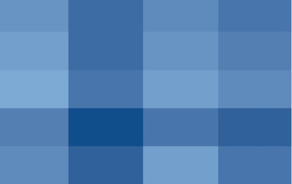

PET Estatística
Integrantes
Artigos
O Curso
Sobre o PET
Artigos
Categorias
Todos
(7)
análise de desempenho
(1)
basquete
(1)
esporte
(1)
estatística
(1)
futebol
(1)
gráficos
(1)
knn
(1)
medidas de dispersão
(1)
modelos
(1)
modelos de recomendação
(1)
segurança
(1)
teste de hipóteses
(1)
Aumente suas chances de não ser roubado em Uberlândia
segurança
Entender o comportamento de crimes é uma ferramenta muito importante para gerar ações capazes de evitá-los e também combatê-los
05/08/2024
Bruno de Souza Melo
Por trás do modelo KNN
modelos
knn
Descubra o poder do K-Nearest Neighbors (KNN), um algoritmo intuitivo para tarefas de classificação e regressão e que possui aplicações que vão desde a identificação de spam até diagnósticos médicos.
19/07/2024
Raiane Rosseti
Teste de Hipóteses: Guia Prático para Análise Estatística
teste de hipóteses
Um guia prático para te ajudar a utilizar corretamente os testes de hipóteses.
19/07/2024
Gabriel Moreira
Estatística no Basquete: Transformando a Escolha do MVP
esporte
basquete
O uso da estatística no basquete: Nikola Jokic mereceu o prêmio MVP?
12/07/2024
Gabriel Assis Godrim
As melhores recomendações
modelos de recomendação
Descobrir sobre os tipos de modelos de recomendação e aplicações na nossa rotina.
05/07/2024
Victor Borin

Mapas de Calor
gráficos
Explicando o que são mapas de calor e como construí-los no R
28/06/2024
Maria Cecília Macedo
Uma medida regularmente esquecida
medidas de dispersão
estatística
futebol
análise de desempenho
A partir de exemplos práticos, este artigo mostra como o coeficiente de variação pode ser utilizado na análise de dados.
21/06/2024
Pedro Garcia
Sem itens correspondentes